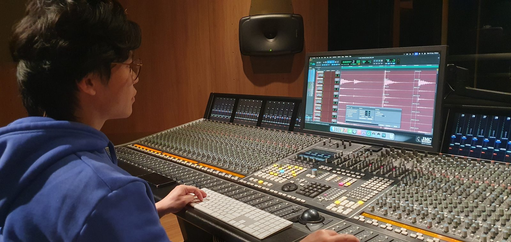

Sound Producer & Live Sound Technician — Sydney
Sound is built on trust, not just gear.
I record, I listen, and I help shape the song with you — from a church PA to artist's demo.
Hear my workBio
I love working with artists and making sure their sound gets produced to its fullest form. For me, the best part isn't the editing — it's the recording session itself, where trust gets built and the artist relaxes enough to give their real performance.
I've recorded bands and solo artists, run live sound for church services, and I'm currently studying Audio Engineering at JMC Academy. Let's partner up and bring your sound to life.

Skills
Technical
- Pro Tools (DAW)
- Signal flow & gain staging
- Microphone setup & placement
- Mixing console operation
- Live troubleshooting under pressure
Live Sound
- PA system setup & delivery
- FOH mixing for bands & vocalists
- Event & service sound operation
Working with People
- Building trust quickly in a session
- Clear communication with artists & teams
- Adaptable under time pressure
Approach
I believe the best recordings happen when the artist feels comfortable enough to create in the moment — not just perform what they rehearsed.
When I was recording a band's demo, I heard a melodic idea forming during one section and shared it with them. They loved it, and we ended up adding a bass solo that wasn't in the original plan. Working with a solo artist, I had a similar instinct for a guitar solo at the end of a track — he ran with it, and it pushed the song into a stronger Alternative Rock direction.
I also believe good mixing comes from listening to more than just my own ears. For church productions, I regularly ask the congregation and band for feedback on my mixes — their input shapes how I approach the next session.
At the same time, I know studio time is limited. When recording with bands, I keep the room focused — enough space to connect, but structured enough to get through takes efficiently.
"Working efficiently as a producer — able to capture a lot of takes and parts within restricted hours." — Band member, studio session
Work
Church Production
Behind the Scenes
Solo Artist — "Breathe and Stone"
Behind the Scenes
Band Session — "LED" (Raw Unmix)
Behind the Scenes
Contact
Let's work together
Got a session, a mix, or an idea you want to bring to life? Reach out and let's talk about your project.
Get in touch